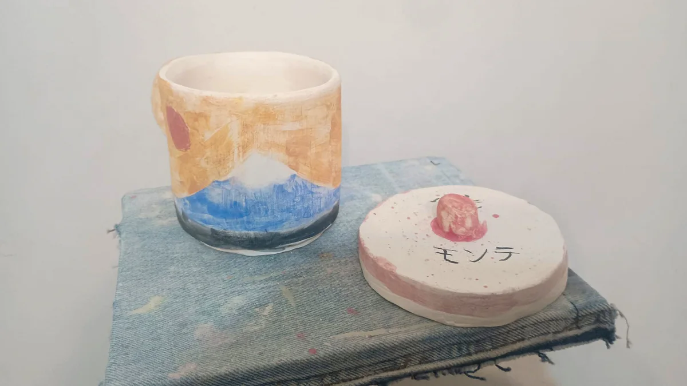

← Volver al tallerUn encuentro.
Un encuentro.
Algo hecho por vos.
Experiencias puntuales para explorar materiales, aprender algo nuevo y compartir una mesa de trabajo.

Próximo encuentro a confirmarCerámica
Mayores de 18 años · Sin experiencia previa
Cerámica
& Vino.
Una invitación a poner las manos en la arcilla y compartir un momento de creación.
Modelá una pieza con acompañamiento docente. Después del secado, horneado y esmaltado, la retirás terminada.
- Explorá la arcilla y dale forma a tu idea.
- Creá con orientación durante el encuentro.
- Coordiná el retiro de tu pieza terminada.
La fecha y los detalles de la próxima edición están a confirmar. Escribinos para consultar por la propuesta.
Consultar por el próximo encuentroVení a conocer Punto y Trama.
Contanos qué te gustaría hacer. Te orientamos sobre la propuesta y el grupo para vos o para quien vaya a asistir.
Tu primera clase de un taller regular es gratuita.